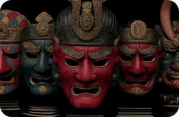
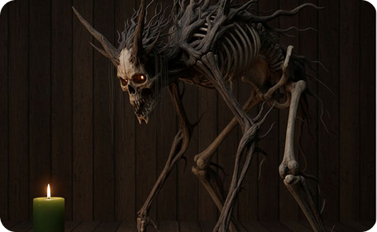
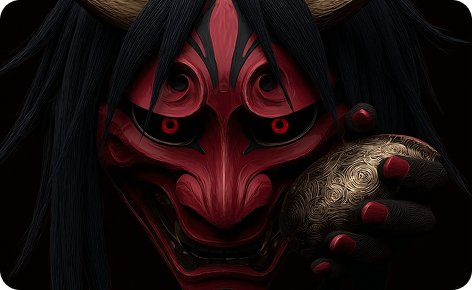
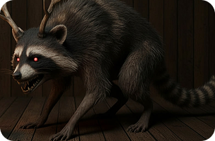
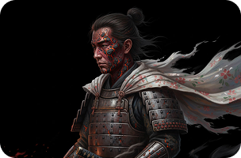

ИМПЕРАТОР СУТОКУ
Один из трех величайших мстительных духов Японии. После поражения умер в изгнании.


Один из трех величайших мстительных духов Японии. После поражения умер в изгнании.

Злой дух, питающийся трупами, приносящий разложение и болезни. Дзикининки становятся люди, совершившие при жизни тяжкий грех, проявившие крайний эгоизм, алчность или неуважение к мертвым.

Король демонов (они), один из самых могущественных и известных демонов-они в японском фольклоре, предводитель ёкаев, терроризировавший окрестности Киото в эпоху Хэйан (794–1185).

Енотовидные собаки, способные наводить морок и болезни. Герои детских песенок про зло.

В легендах, народных сказках и местных верованиях она часто изображается как отвратительное существо, напоминающее ведьму, которое похищает женщин из местных деревень, ест скот и маленьких детей и мучает любого, кто заходит на её территорию.